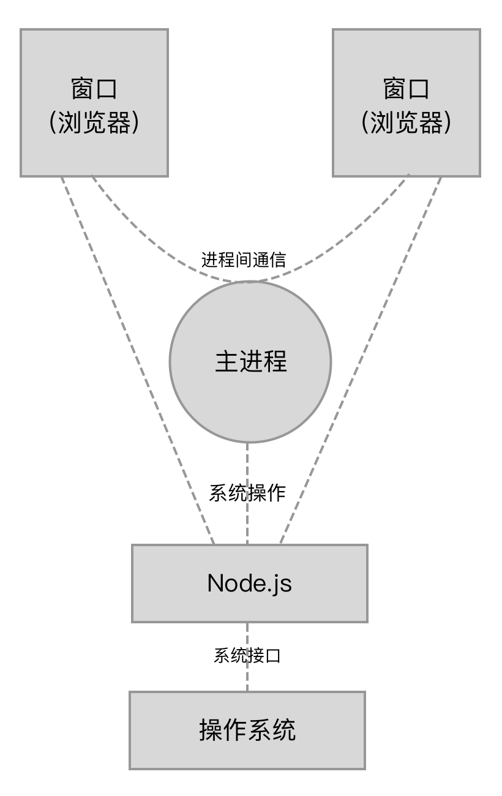
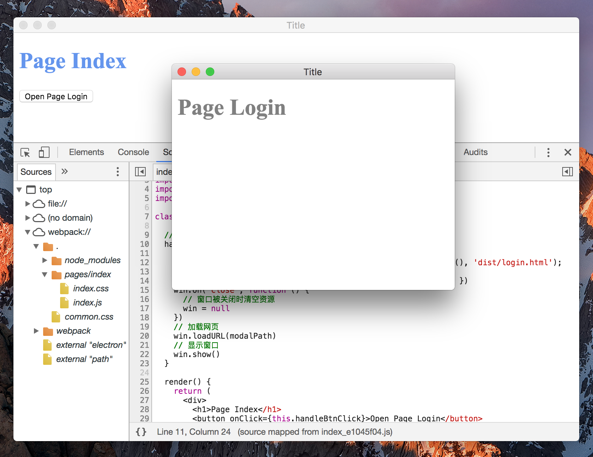

3-12 构建 Electron 应用
认识 Electron
Electron 可以让你使用开发 Web 的技术去开发跨平台的桌面端应用，由 Github 主导和开源，大家熟悉的 Atom 和 VSCode 编辑器就是使用 Electron 开发的。
Electron 是 Node.js 和 Chromium 浏览器的结合体，用 Chromium 浏览器显示出的 Web 页面作为应用的 GUI，通过 Node.js 去和操作系统交互。 当你在 Electron 应用中的一个窗口操作时，实际上是在操作一个网页。当你的操作需要通过操作系统去完成时，网页会通过 Node.js 去和操作系统交互。
采用这种方式开发桌面端应用的优点有：
- 降低开发门槛，只需掌握网页开发技术和 Node.js 即可，大量的 Web 开发技术和现成库可以复用于 Electron；
- 由于 Chromium 浏览器和 Node.js 都是跨平台的，Electron 能做到写一份代码在不同的操作系统运行。
在运行 Electron 应用时，会从启动一个主进程开始。主进程的启动是通过 Node.js 去执行一个入口 JavaScript 文件实现的，这个入口文件 main.js 内容如下：
const { app, BrowserWindow } = require('electron')
// 保持一个对于 window 对象的全局引用，如果你不这样做，
// 当 JavaScript 对象被垃圾回收， window 会被自动地关闭
let win
// 打开主窗口
function createWindow() {
// 创建浏览器窗口
win = new BrowserWindow({ width: 800, height: 600 })
// 加载应用的 index.html
const indexPageURL = `file://${__dirname}/dist/index.html`;
win.loadURL(indexPageURL);
// 当 window 被关闭，这个事件会被触发
win.on('closed', () => {
// 取消引用 window 对象
win = null
})
}
// Electron 会在创建浏览器窗口时调用这个函数。
app.on('ready', createWindow)
// 当全部窗口关闭时退出
app.on('window-all-closed', () => {
// 在 macOS 上，除非用户用 Cmd + Q 确定地退出
// 否则绝大部分应用会保持激活
if (process.platform !== 'darwin') {
app.quit()
}
})
主进程启动后会一直驻留在后台运行，你眼睛所看得的和操作的窗口并不是主进程，而是由主进程新启动的窗口子进程。
应用从启动到退出有一系列生命周期事件，通过 electron.app.on() 函数去监听生命周期事件，在特定的时刻做出反应。 例如在 app.on('ready') 事件中通过 BrowserWindow 去展示应用的主窗口，具体用法见 BrowserWindow 的 API 文档。
启动的窗口其实是一个网页，启动时会去加载在 loadURL 中传入的网页地址。 每个窗口都是一个单独的网页进程，窗口之间的通信需要借助主进程传递消息。

总体来说开发 Electron 应用和开发 Web 应用很相似，区别在于 Electron 的运行环境同时内置了浏览器和 Node.js 的 API，在开发网页时除了可以使用浏览器提供的 API 外，还可以使用 Node.js 提供的 API。
接入 Webpack
接下来做一个简单的 Electron 应用，要求为应用启动后显示一个主窗口，在主窗口里有一个按钮，点击这个按钮后新显示一个窗口，且使用 React 开发网页。
由于 Electron 应用中的每一个窗口对应一个网页，所以需要开发2个网页，分别是主窗口的 index.html和新打开的窗口 login.html。 也就是说项目由2个单页应用组成，这和3-10管理多个单页应用 中的项目非常相似，让我们来把它改造成一个 Electron 应用。
需要改动的地方如下：
- 在项目根目录下新建主进程的入口文件
main.js，内容和上面提到的一致； - 主窗口网页的代码如下：
import React, { Component } from 'react';
import { render } from 'react-dom';
import { remote } from 'electron';
import path from 'path';
import './index.css';
class App extends Component {
// 在按钮被点击时
handleBtnClick() {
// 新窗口对应的页面的 URI 地址
const modalPath = path.join('file://', remote.app.getAppPath(), 'dist/login.html');
// 新窗口的大小
let win = new remote.BrowserWindow({ width: 400, height: 320 })
win.on('close', function () {
// 窗口被关闭时清空资源
win = null
})
// 加载网页
win.loadURL(modalPath)
// 显示窗口
win.show()
}
render() {
return (
<div>
<h1>Page Index</h1>
<button onClick={this.handleBtnClick}>Open Page Login</button>
</div>
)
}
}
render(<App/>, window.document.getElementById('app'));
其中最关键的部分在于在按钮点击事件里通过 electron 库里提供的 API 去新打开一个窗口，并加载网页文件所在的地址。
页面部分的代码已经修改完成，接下来修改构建方面的代码。 这里构建需要做到以下几点：
- 构建出2个可在浏览器里运行的网页，分别对应2个窗口的界面；
- 由于在网页的 JavaScript 代码里可能会有调用 Node.js 原生模块或者
electron模块，也就是输出的代码依赖这些模块。但由于这些模块都是内置支持的，构建出的代码不能把这些模块打包进去。
要完成以上要求非常简单，因为 Webpack 内置了对 Electron 的支持。 只需要给 Webpack 配置文件加上一行代码即可，如下：
target: 'electron-renderer',
这句配置曾在2-7其它配置项-Target中提到，意思是指让 Webpack 构建出用于 Electron 渲染进程用的 JavaScript 代码，也就是这2个窗口需要的网页代码。
以上修改都完成后重新执行 Webpack 构建，对应的网页需要的代码都输出到了项目根目录下的 dist 目录里。
为了以 Electron 应用的形式运行，还需要安装新依赖：
# 安装 Electron 执行环境到项目中
npm i -D electron
安装成功后在项目目录下执行 electron . 你就能成功看到启动的桌面应用了，效果如图：

本实例提供项目完整代码